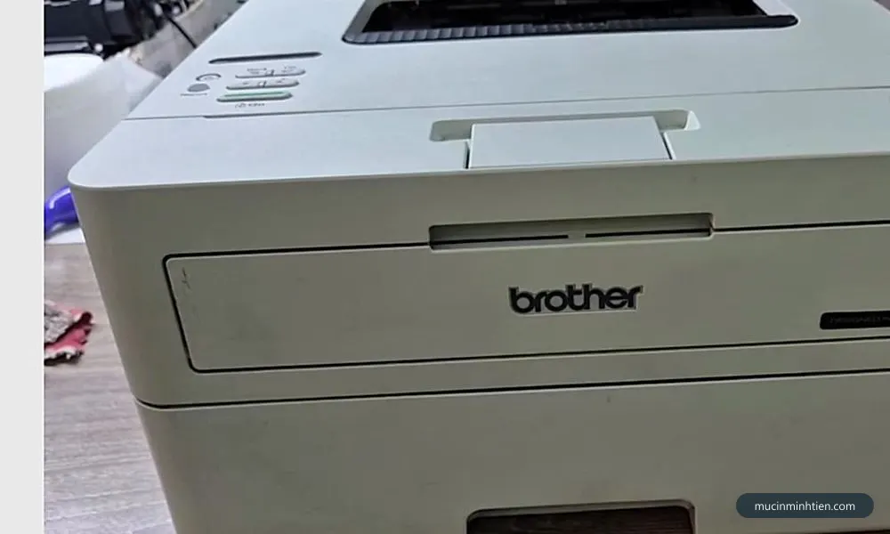
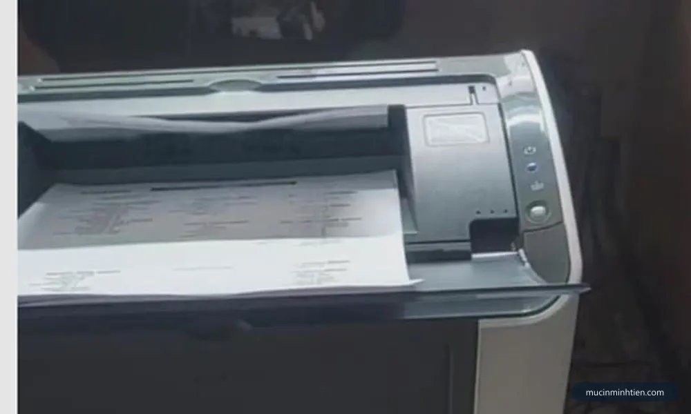
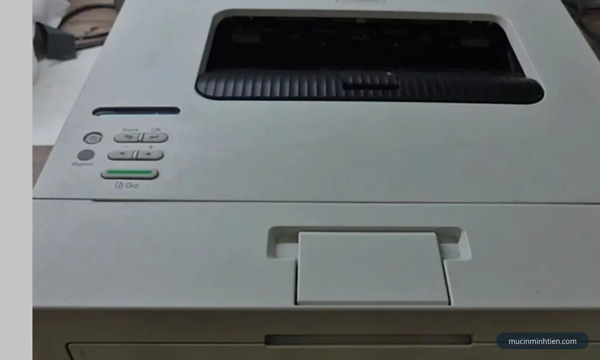
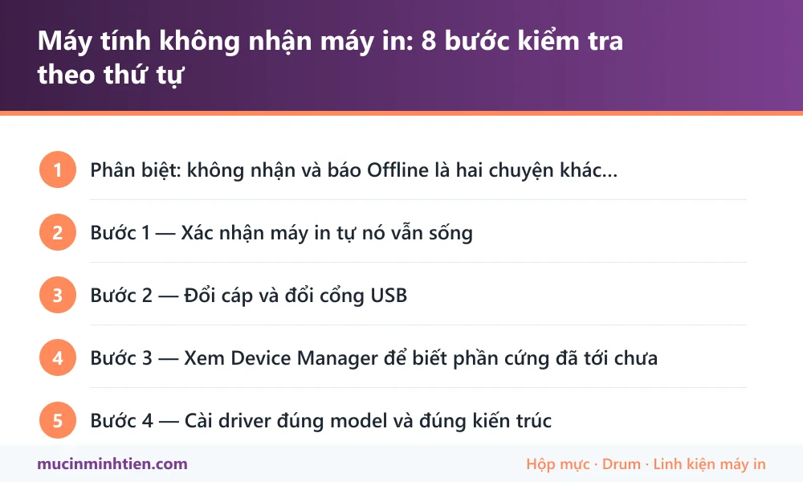

Máy tính không nhận máy in: 8 bước kiểm tra theo thứ tự
Bước 1 — Xác nhận máy in tự nó vẫn sống
Bước này mất một phút và loại trừ được nửa vấn đề. Gần như mọi máy in đều in được trang cấu hình bằng tổ hợp nút trên chính máy, không cần máy tính.
- In được trang cấu hình — máy in hoàn toàn tốt. Vấn đề nằm ở cáp, cổng, driver hoặc mạng. Đi tiếp bước 2.
- Không in được, đèn báo lỗi — lỗi ở chính máy in. Đọc đèn báo hoặc màn hình rồi xử lý theo lỗi cụ thể trong mục hướng dẫn sửa lỗi máy in.
Với máy nối mạng, trang cấu hình còn cho biết địa chỉ IP hiện tại — thông tin cần đến ở bước 6.

Bước 2 — Đổi cáp và đổi cổng USB
Đây là nguyên nhân bị đánh giá thấp nhất, nhưng chiếm tỉ lệ rất cao trong các ca chúng tôi nhận, đặc biệt ở máy đã dùng nhiều năm.
- Cắm thẳng vào cổng phía sau thùng máy tính. Cổng sau nối trực tiếp lên bo mạch chủ; cổng trước đi qua dây nối bên trong thùng và hay tiếp xúc kém.
- Bỏ hub USB. Hub không có nguồn riêng thường không cấp đủ dòng cho máy in, gây hiện tượng lúc nhận lúc không.
- Đổi sang cáp khác. Cáp USB máy in hay bị gãy ngầm ở đoạn sát đầu cắm, nhìn ngoài không thấy gì.
- Tránh dây nối dài. Cáp càng dài tín hiệu càng yếu, nhất là cáp rẻ tiền.
- Thử cắm máy in sang một máy tính khác. Máy kia nhận được thì lỗi nằm ở máy tính đầu tiên.
Bước 3 — Xem Device Manager để biết phần cứng đã tới chưa
Đây là bước phân định rõ nhất giữa lỗi phần cứng và lỗi phần mềm, nhưng ít người dùng phổ thông biết mở.
- Nhấn tổ hợp phím Windows và chữ X, chọn Device Manager, hoặc nhấn Windows và R rồi gõ devmgmt.msc.
- Bật máy in và cắm cáp. Quan sát danh sách khi cắm vào và rút ra.
- Đọc kết quả:
- Danh sách nhấp nháy, hiện thêm một mục khi cắm — phần cứng đã được nhận. Lỗi thuộc về driver, đi tiếp bước 4.
- Hiện mục có dấu chấm than vàng hoặc Unknown device — đã nhận thiết bị nhưng chưa có driver phù hợp. Đây là tin tốt, chỉ cần cài đúng driver.
- Không có gì thay đổi khi cắm vào rút ra — tín hiệu chưa tới máy tính. Quay lại bước 2, đổi cáp và đổi cổng.

Bước 4 — Cài driver đúng model và đúng kiến trúc
Chỉ tới bước này mới nên nghĩ tới driver. Hai điều kiện phải đúng cùng lúc: đúng model máy in và đúng kiến trúc hệ điều hành.
- Tải từ trang chính thức của hãng. Driver máy in luôn miễn phí; trang tổng hợp bên thứ ba hay gói kèm phần mềm rác.
- Chọn đúng 32-bit hay 64-bit. Kiểm tra trong Settings, mục About, dòng System type.
- Windows 11 chưa có bản riêng thì dùng bản Windows 10 64-bit. Hai hệ dùng chung kiến trúc driver.
- Cài đúng thứ tự với kết nối USB: chạy bản cài trước, chỉ cắm cáp khi được yêu cầu.
Hướng dẫn chi tiết cho dòng Canon LBP có ở bài driver Canon LBP 251dw, 252dw. Các kiểu kết nối khác xem cách cài đặt máy in vào máy tính.
Bước 5 — Dọn sạch các mục máy in cũ còn sót
Máy tính đã cài đi cài lại nhiều lần thường tồn một đống mục rác. Chúng tranh nhau cùng một cổng và làm bản cài mới báo lỗi.
- Mở danh sách máy in, xoá hết các mục liên quan tới máy in đang xử lý.
- Khởi động lại dịch vụ in: nhấn Windows và R, gõ services.msc, tìm Print Spooler, chuột phải chọn khởi động lại.
- Khởi động lại máy tính. Bước này không bỏ qua được vì Windows chỉ dọn hẳn cổng in cũ sau khi khởi động lại.
- Cài lại driver từ đầu.
Bước 6 — Máy in nối mạng: đối chiếu lớp mạng
Với máy in dùng cổng LAN hoặc Wi-Fi, nguyên nhân phổ biến nhất là máy tính và máy in không nằm cùng một mạng nội bộ.
- In trang cấu hình từ máy in để lấy địa chỉ IP thật.
- Trên máy tính, nhấn Windows và R, gõ cmd, rồi gõ ipconfig để xem IP máy tính.
- So ba cụm số đầu của hai địa chỉ — phải giống nhau, ví dụ cùng bắt đầu bằng 192.168.1.
- Gõ lệnh ping kèm IP máy in. Có phản hồi nghĩa là đường mạng thông, lỗi nằm ở driver hoặc cổng in. Không phản hồi thì lỗi nằm ở mạng.
Trường hợp hay gặp trong văn phòng: máy tính nối Wi-Fi khách còn máy in cắm dây vào mạng nội bộ. Hai mạng tách biệt nên không bao giờ thấy nhau, dù đứng cạnh nhau trong cùng phòng.

Bước 7 — Máy in chia sẻ từ một máy tính khác
Kiểu dùng này rất phổ biến ở văn phòng nhỏ và cũng hay hỏng nhất, vì nó phụ thuộc vào một máy tính khác.
- Máy tính đang giữ máy in phải đang bật và không ở chế độ ngủ. Đây là lý do số một khiến in được buổi sáng, chiều thì không.
- Cả hai máy phải bật tính năng dò tìm mạng và cùng một mạng nội bộ.
- Tài khoản truy cập phải có quyền. Đổi mật khẩu trên máy giữ máy in là các máy khác mất kết nối.
- Bản cập nhật Windows có thể tắt tính năng chia sẻ cũ vì lý do bảo mật.
Bước 8 — Loại trừ cập nhật hệ điều hành và phần mềm bảo mật
- Máy in biến mất ngay sau một đợt cập nhật Windows — bản cập nhật đã thay driver hãng bằng driver cơ bản, hoặc gỡ hẳn thiết bị. Cài lại driver chính thức.
- Phần mềm diệt virus hoặc tường lửa chặn — hay gặp với máy in mạng. Tạm tắt để thử, nếu đúng thì thêm ngoại lệ chứ đừng tắt hẳn.
- Máy tính công ty bị khoá chính sách — không cài được driver do không đủ quyền quản trị. Cần người quản trị hệ thống cấp quyền.
Bảng tra: dấu hiệu nào ứng với nguyên nhân nào
| Biểu hiện | Nguyên nhân | Cách xử lý | Chi phí |
|---|---|---|---|
| Máy in không in nổi trang cấu hình | Lỗi ở chính máy in | Đọc đèn báo, xử lý theo lỗi cụ thể | tuỳ lỗi |
| Cắm vào rút ra, Device Manager không đổi | Cáp đứt ngầm hoặc cổng USB hỏng | Đổi cáp, cắm cổng sau, bỏ hub | 0 đ |
| Hiện Unknown device có dấu chấm than | Chưa có driver phù hợp | Cài driver đúng model và kiến trúc | 0 đ |
| Bản cài chạy giữa chừng rồi lỗi | Sai kiến trúc, hoặc còn mục máy in cũ chiếm cổng | Dọn mục cũ, khởi động lại, cài lại | 0 đ |
| Máy in mạng ping không phản hồi | Khác lớp mạng hoặc rớt mạng | Đối chiếu IP, nối lại mạng cho máy in | 0 đ |
| Sáng in được, chiều thì không | Máy tính giữ máy in chia sẻ đã ngủ hoặc tắt | Tắt chế độ ngủ, hoặc chuyển sang nối LAN | 0 đ |
| Cả văn phòng cùng mất máy in một lúc | Cập nhật Windows hoặc máy chủ chia sẻ tắt | Cài lại driver đồng loạt | từ 100.000 đ |
| Nhận máy in nhưng in ra chữ mờ, sọc | Không phải lỗi kết nối, mà là lỗi hộp mực | Xử lý theo lỗi bản in | tuỳ lỗi |
Nhóm lỗi này là lỗi phần mềm và kết nối nên không tốn tiền linh kiện. Cần người làm giúp tận nơi tại TP.HCM thì gọi 0915 510 203.
Khi nào nên gọi kỹ thuật viên
- Đã đổi cáp, đổi cổng, đổi máy tính mà vẫn không nhận.
- Máy in nối mạng công ty có phân vùng, cần người biết cấu hình mạng.
- Cần cài và chia sẻ cho nhiều máy tính trong văn phòng cùng lúc.
- Danh sách máy in đầy mục rác không xoá được, cần dọn sạch cấp hệ thống.
- Máy in dùng cho công việc gấp, không có thời gian thử từng bước.
Báo giá cài đặt và xử lý kết nối máy in tận nơi
| Hạng mục | Áp dụng | Giá tham khảo |
|---|---|---|
| Kiểm tra, cài driver và in thử | Một máy tính | từ 100.000 đ |
| Dọn mục máy in rác, cài lại từ đầu | Một máy tính | từ 100.000 đ |
| Đặt IP tĩnh, khai cổng in cho máy in mạng | Máy in có cổng LAN hoặc Wi-Fi | từ 100.000 đ |
| Chia sẻ máy in cho nhiều máy tính | Văn phòng | Báo giá theo số máy |
| Xử lý lỗi bản in kèm theo | Mờ, sọc, lem, kẹt giấy | tuỳ lỗi, báo trước khi làm |
Xem đầy đủ hạng mục và cam kết ở trang dịch vụ sửa máy in tận nơi TP.HCM.
